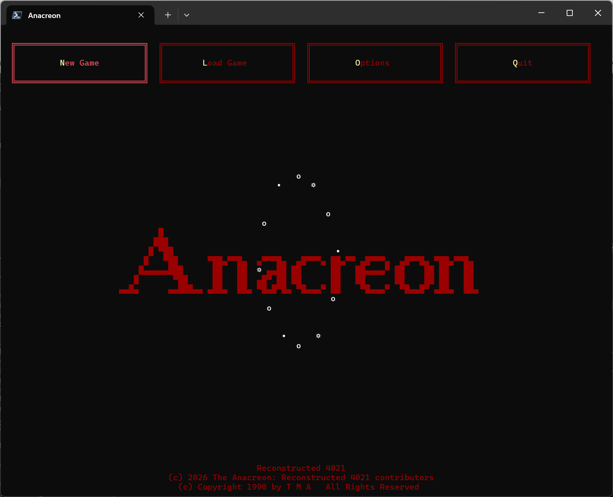
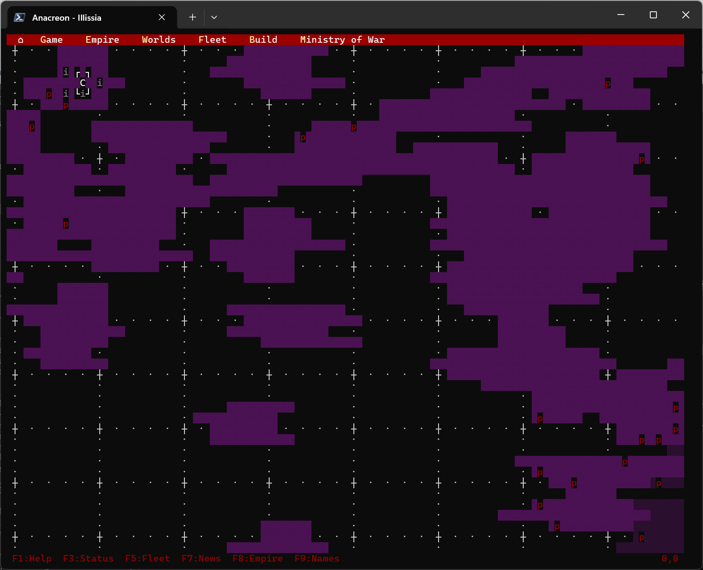
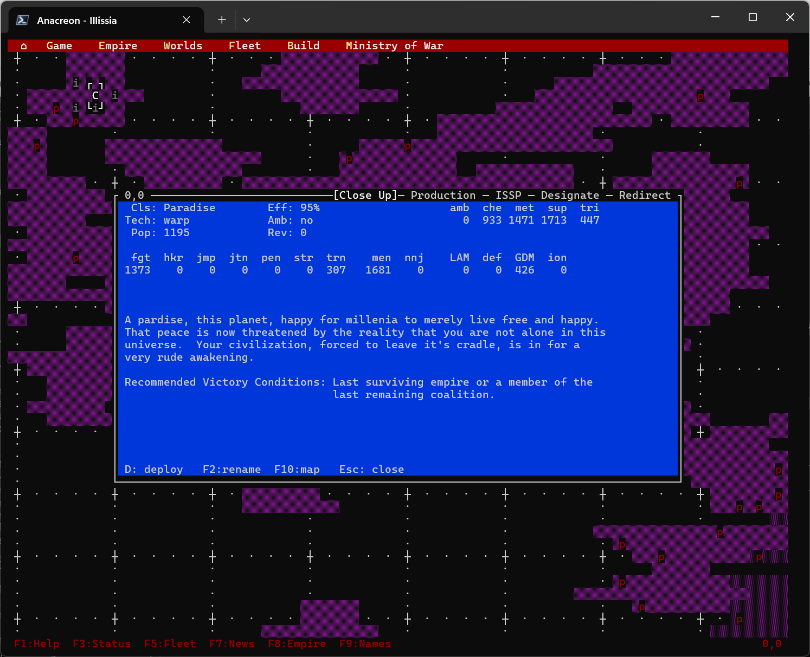
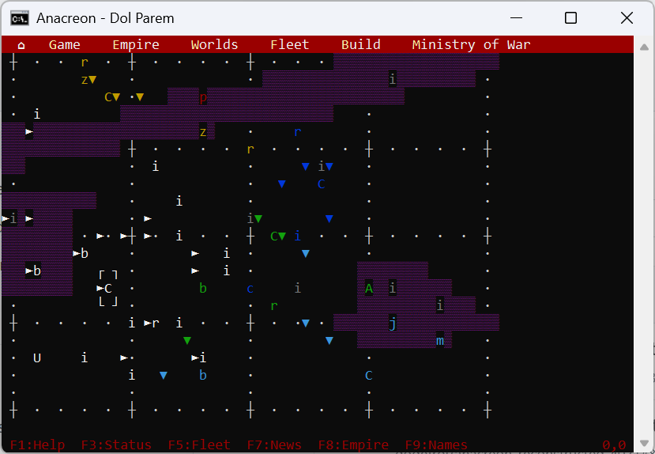
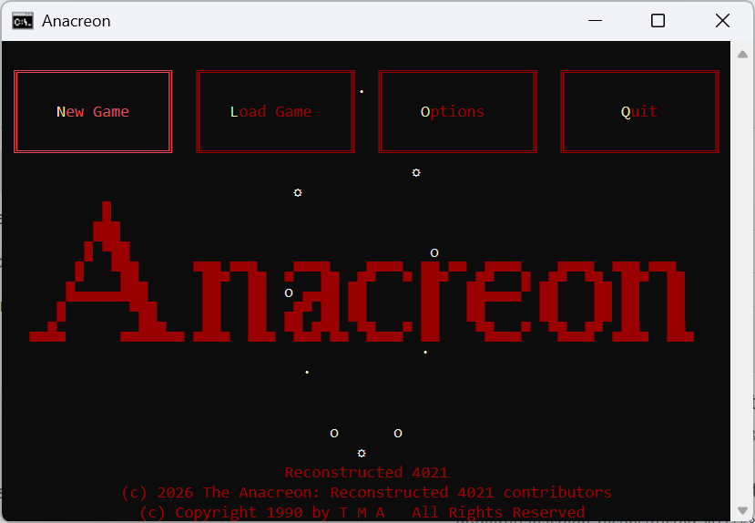

Explore
Send probes and fleets into an unknown galaxy. Find useful worlds, hidden routes, and opportunities for expansion.
A classic space 4X, reconstructed
Anacreon is a strategy game of exploration, industry, diplomacy, and war. Command worlds and fleets, grow your civilization, and decide what kind of empire will survive the next century.

Your empire. Your decisions.
Start with a capital and a handful of worlds. Turn resources into ships, ships into influence, and influence into a civilization that can withstand rivals, rebellion, and the distances between the stars.
Send probes and fleets into an unknown galaxy. Find useful worlds, hidden routes, and opportunities for expansion.
Choose how each world serves your empire. Balance food, industry, technology, and the logistics that connect them.
Build and move fleets, defend your territory, and take the initiative when another empire stands in your way.
See the command deck
This project brings the original DOS 1.31 experience to modern systems, preserving its systems and character while making it practical to build, run, and play again.




Ready when you are
The game is actively being reconstructed and improved. Visit the releases page for the latest playable build, or explore the repository to see how the original game is being brought forward.